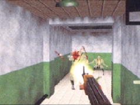
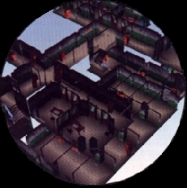
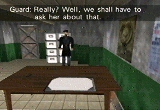
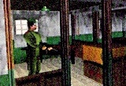
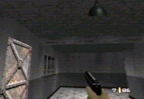
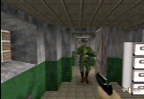
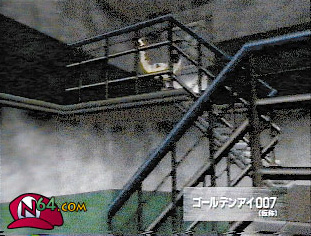
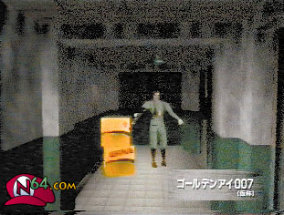

|
| Goldeneye
Version Beta : Archives |
| On
va commencer par 2 Photos montrant l'Ancien KF7. Vous pouvez retrouver
un de ces 2 Images sur la Boite de Goldeneye, comme quoi le KF7 fut
une des Dernières choses a etres changée. Il y a aussi
du SANG présent. Il y a également Deux Sortes de Guardes
! |


Ci-dessous, une Vue exteriure du Niveau (assez bordelique je vous l'accorde) qui montre l'absence du Passage Secret ou il y a un Gilet dans le Battle. En zoomant on voit des trucs enlevés, comme ces Sous-Mains ! |


Ci-dessous, une Vue du Sous-mains retrouvé ! En fait, le Code Action Replay change l'apparence du PP7 devant vous en quelque chose de particulier. Si vous vous approchez trop, vous le rammasserez et aurez votre PP7 d'origine alors gaffe aux Gardes ! Sur la Deuxième Photo, on voit une Lampe au plafond que l'on retrouve dans le Depot. C'est une Lampe Bitmap, c'est à dire un Sprite, et non un Objet 3D. |



Ci-dessous, une comparaison avec la Vitre sur la Gauche, qui a changé un peu.


Ci-dessous, 2 Photos de la Version Virtua Cop de Goldeneye (lire l'Excellent Making-Of). Beta ou non, il semble qu'il y ait des Russian Infantry, et la Rampe d'Escalier semble un peu plus Bleue. Les Caisses en Carton ont une teinte un peu changée égalemment. |

